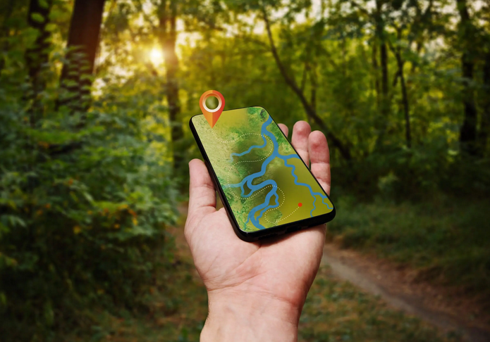

Do not get lost in the wilderness
Using Android Mobile App for Outdoor Orienteering and Tracking
Dr. Giuseppe Amatulli
Research Scientist in GeoComputation and Spatial Science

Videos
English Version
Version en Español
Versione in Italiano
Instrument features
Easy to use.
Location accuracy.
Easy and free installation of maps.
Store capability of off-line maps.
Maps load capability without data service.
Way-point and Tracking capability.
Interoperability with other platform.
Low consumption of battery usages.
Organize your next adventure
Prepare your routs/maps/satellite-images at home.
Pre-load maps and routs in your mobile.
Share the routs/maps/satellite-images with your team.
At least 3 persons need be able to navigate and bring all the device needed.
Full charge the battery.
Bring an external battery (powerbank) for emergency.
During navigation put the phone in airplane mode and in battery saving mode.
Close all the other apps.
App/web-platforms with Navigation and GPS capability
Off-line Navigation:
Maps.me App: https://maps.me.
Routing and Mapping:
Ride with GPS: https://ridewithgps.com.
CalTopo: https://caltopo.com.
Open Railway Map: https://www.openrailwaymap.org.
Orienteering and Tracking:
Locus App: http://www.locusmap.eu.
Map store:
Off-line vector maps: https://www.openandromaps.org/en.
Maps.me app: https://maps.me
Easy to install and use.
Off-line vectors maps free to download from the Maps.me app.
Web-platform with web-gis interface.
Navigation system (from – to), in off/on-line mode.
Voice Navigation.
Share location.
Ride with GPS: https://ridewithgps.com
Web-GIS mapping interface for route planner.
Good for planing and pre-tracking.
Personal account for storing routes.
Vector maps and satellite images visualization.
Common road and biking/hiking trails.
Auto-routing (from – to) on small road.
Adjusting routing using draw lines capability.
Import/export .gpx format → import in Locus for off-line navigation.
CALTOPO: https://caltopo.com
Web-GIS mapping interface.
Vector maps and satellite images visualization.
Off-line data storage only under annual subscription.
Vector editing/labeling.
Import/export gpx.
Good for planing and pre-traking.
Open Railway Map: https://www.openrailwaymap.org
Web-platform with web-gis interface with railway visualization.
Good for planing train+bike or train+hiking trips.
Locus App: http://www.locusmap.eu
Web-GIS planer for routing https://web.locusmap.app/en.
Automatic route delineation (from-to).
Export .gpx.
Mobile app https://www.locusmap.app/.
Visualization of off-line maps.
Live recording .gpx track.
Import/export .gpx.
Share live location.
Pre-download capability of satellite images.
Off-line voice navigation via BRouter app.
Multi-track visualization.
Off-line vector maps: https://www.openandromaps.org/en
Country by Country selection of off-line maps in vector form.
Quick-install of off-line maps for Locus.
From your android navigate on the https://www.openandromaps.org/en/downloads.
Navigate to your favorite map-download page.
Click on the “+” symbol left of the mapname you want to download.
Click on “Locus Map+Pois” , at this point the map is downloaded and installed in the right.
When the download is done you will need activate the map Click on Locus Menu → Map manager → Off-Line → Select on the map.